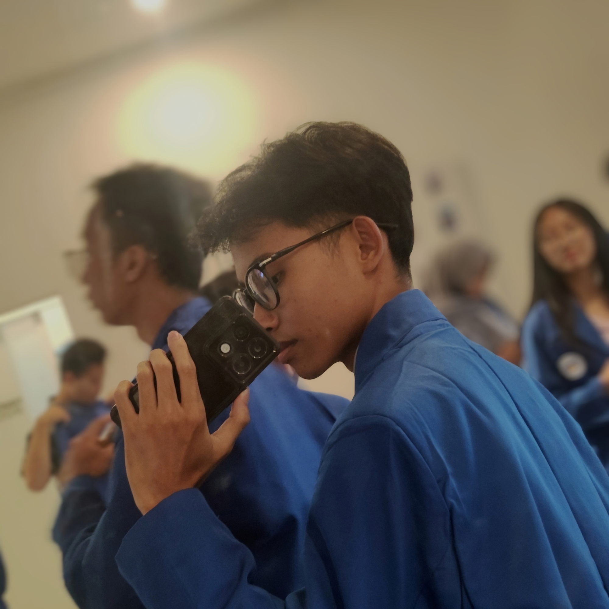

WELCOME TO MY PORTFOLIO
|
DevOps & Cloud Enthusiast — "Building scalable cloud environments and automating pipelines to create efficient software workflows."
Saya adalah mahasiswa Teknik Informatika yang berfokus pada DevOps, Cloud Computing, dan Computer Networking. Berbekal prestasi akademik sejak SMK serta pengalaman magang di PT. Kazee Digital Indonesia - Bandung dalam dalam mengelola stabilitas dan uptime server, saya berkomitmen untuk menciptakan sistem operasional yang efisien melalui otomatisasi dan teknologi cloud."

Riwayat pendidikan dan profesi yang membentuk kompetensi saya.
Perjalanan pendidikan formal yang membentuk fondasi keilmuan saya.
S1 Fakultas Ilmu Komputer / Teknik Informatika
AktifTeknik Jaringan Komputer & Telekomunikasi
LulusBerhasil meraih posisi ke-3 dalam ajang Lomba Kompetensi Siswa (LKS) bidang IT Network Systems Administration, membuktikan keahlian dalam konfigurasi server, manajemen jaringan, dan pemecahan masalah infrastruktur IT di tingkat kabupaten.
Meraih peringkat pertama berkat kemampuan merancang instruksi (prompt engineering) dan memanfaatkan teknologi Generative AI untuk menciptakan solusi digital yang kreatif dan inovatif di lingkungan sekolah.
MTs NU Nurussalam Besito — Kabupaten Kudus
LulusMI NU AL-Khuriyyah 03 — Kabupaten Kudus
LulusIT Operational - Internship (June 16 - October 31)
Teknologi dan bidang yang saya kuasai dan terus saya kembangkan.
Bukti komitmen saya dalam pengembangan kompetensi secara berkelanjutan.
{kind=link}